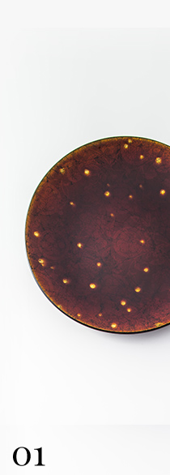
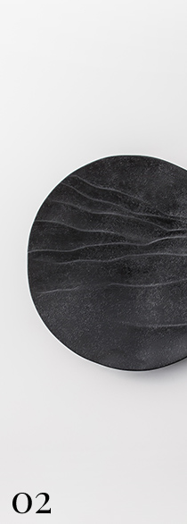

yuenとは､工芸の本来の形に寄り添いながら、
それらの"所以(ゆえん)"を"みえる価値"にし、使われるシーンと縁を結ぶ小さな仲介役です。
日本らしさを消費するのではなく、
互いに価値を高めていくパートナーとして紹介し、
レストランツールや内装、ファッションブランドなどのクリエーションのバックアップをします。
日本のエッセンス
-工芸etc
化学反応が起きるジャンル
-レストランツール
-内装
-ファッション
レストランや内装などのクリエーションバックアップをした事例をご紹介します。
[CASE2]和仏折衷レストラン×漆器/京漆器の場合
今までの取り組みで関わってきた職人や作家などを紹介します。
All artisians

太田 勲
Isao Ota

新井 悦子
Etsuko Arai
柴田 恭久
Yasuhisa Shibata
yuenが今考えること、産地や海外取材のレポートやイベント情報など、
様々な角度から工芸の本来の形に寄り添った情報をお届けします。